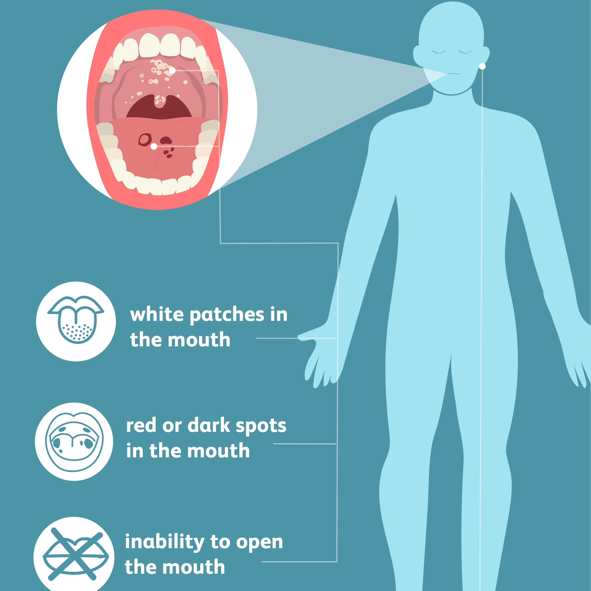

Leukoplakia

SYMPTOMS:
- white or gray color
-
thick, hard, raised surface
-
hairy/fuzzy (hairy leukoplakia only)
-
red spots (rare).
CAUSES:
- injury to the inside of your cheek, such as from biting
-
rough, uneven teeth
-
dentures, especially if improperly fitted
-
inflammatory conditions of the body
-
long-term alcohol use
DIGNOSIS:
- Leukoplakia is usually diagnosed with an oral exam. During an oral exam, your healthcare provider can confirm if the patches are leukoplakia. You might mistake the condition for oral thrush.
-
Thrush is a yeast infection of the mouth. The patches it causes are usually softer than leukoplakia patches. They may bleed more easily. Leukoplakia patches, unlike oral thrush, can’t be wiped away.
TREATMENT:
- Most patches improve on their own and don’t require any treatment. It’s important to avoid any triggers that may have caused your leukoplakia, such as tobacco use.
If a biopsy comes back positive for oral cancer, the patch must be removed immediately. This can help prevent cancer cells from spreading.
Patches can be removed by using laser therapy, a scalpel, or a freezing procedure